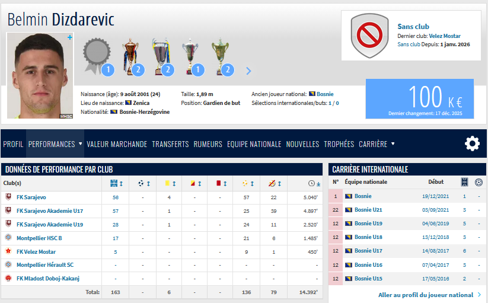

Le gardien qui avait signé à Montpellier en juillet 2023 a rejoint le Standard pour 6 mois et un an en option. Il est en stage au Portugal avec l'équipe première
En attenant d'entendre le directeur sportif du RSCL, Marc Wilmots, parler de lui, voici ce qui avait été dit à son sujet lors de son arrivée en France :
"Le gardien de but bosnien Belmin Dizdarević s’est engagé avec le MHSC. Joueur au gabarit imposant (1m89 / 80kg), ce portier au profil plutôt moderne compte déjà 48 matchs avec l’équipe fanion du FK Sarajevo en championnat bosnien, dont 15 lors du dernier exercice. International U21 régulier, Belmin compte aussi une sélection en équipe A de Bosnie-Herzégovine."
Son profil de joueur à fort potentiel a séduit les dirigeants montpelliérains, très heureux de l’accueillir « C’est le second Bosnien qui nous rejoint après Emir Spahić, j’espère que ce sera aussi prolifique en qualité, à lui de travailler pour montrer toutes ses qualités car il en a ».
Source : Dossier de Presse MHSC
